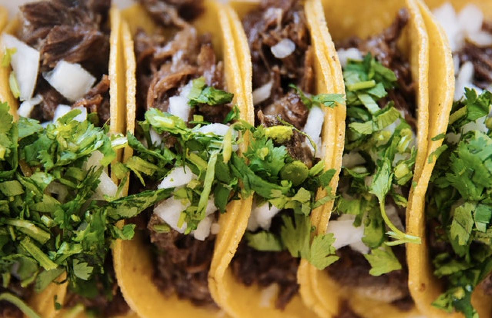

Spicy Black Bean Tacos
Description
These vegetarian bean tacos, lightly spiced with cumin and smoked paprika, are topped with fresh guacamole and a pomegranate salsa.
Ingredients
- 1 tbsp vegetable oil
- 3 garlic cloves, chopped
- 3 x 400g cans black beans, drained and rinsed
- 3 tbsp cider vinegar
- 1 ½ tbsp honey
- 1 ½ tbsp smoked paprika
- 1 ½ tbsp ground cumin
- 1 small garlic clove
- 2 tbsp roughly chopped coriander
- 1 green chilli, sliced
- 2 avocados, halved and stoned
- Juice 1 lime
- 110g pack pomegranate seeds
- 1 green chilli, finely diced
- 1 small white onion, finely diced
- Small handful fresh corriander, chopped
- 8-10 corn or flour tortillas
- Chipotle or other hot sauce
- Soured cream or coconut yoghurt
For the guacamole
For the salsa
To serve
Preparation
- In a large frying pan, heat the oil and add the garlic. Fry until golden, then add the beans. Pour in the cider vinegar, honey and spices along with 1 tsp or more of salt, to taste. Cook until warmed through, crushing gently with the back of your wooden spoon, then set aside.
- The best way to make the guacamole is with a large stone pestle and mortar, but you can use a medium bowl and a flat-ended rolling pin instead. Crush the garlic, coriander and chilli into a rough paste. Scoop in the avocado with a little salt and crush roughly, to be chunky, not smooth. Squeeze in the lime juice and set aside.
- Mix the salsa ingredients in a small bowl. Heat a griddle pan or steamer and quickly griddle the tortillas or steam a stack of them to warm up. Reheat the bean mixture.
- To serve, put 1-2 heaped tbsp of beans on a tortilla. Top with a big spoonful of guacamole and some salsa, hot sauce and a dollop of soured cream or yogurt.